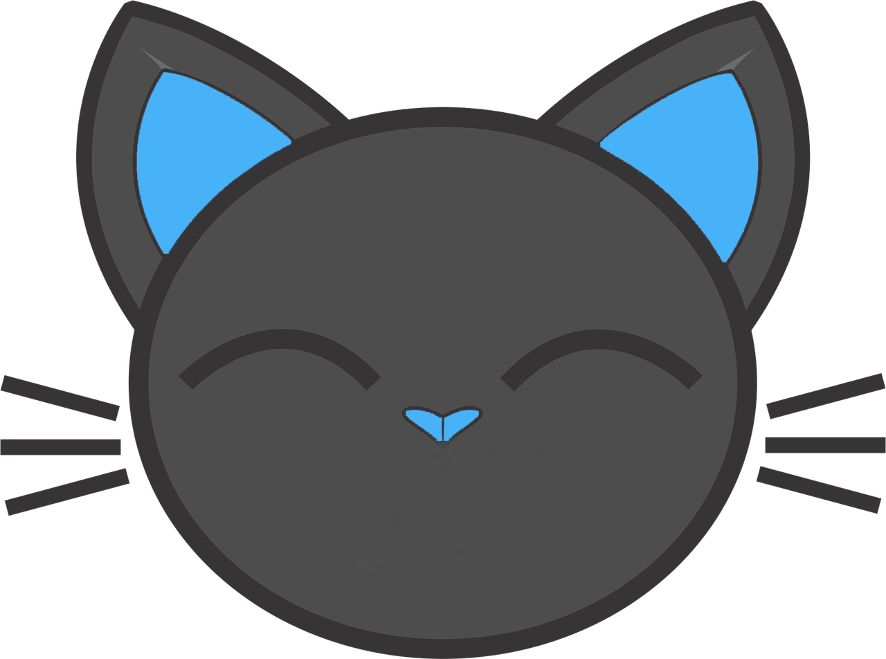

Modèle en mains
Souris
- Clic sur une main
- Lever / poser
- Glisser une main levée
- Déplacer
- Glisser une main posée
- Déplacer sans lever
- Clic sur le fond
- Poser toutes les mains
- Glisser le fond
- Déplacer toute la scène
Raccourcis clavier
- H
- Ajouter une main
- Q
- Pivoter la scène −90°
- Suppr / ⌫
- Tout effacer
- Échap
- Poser toutes les mains
- ?
- Ouvrir / fermer l'aide
- R
- Rotation −30° (sens trigo)
- Maj + R
- Rotation +30° (sens horaire)
- F
- Retournement
- X
- Supprimer la main sélectionnée
- ↑ ↓ ← →
- Déplacer (10 px)
- Maj + flèches
- Déplacer (50 px)